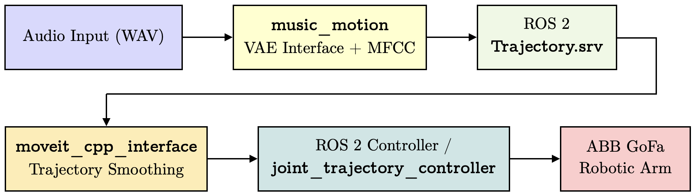
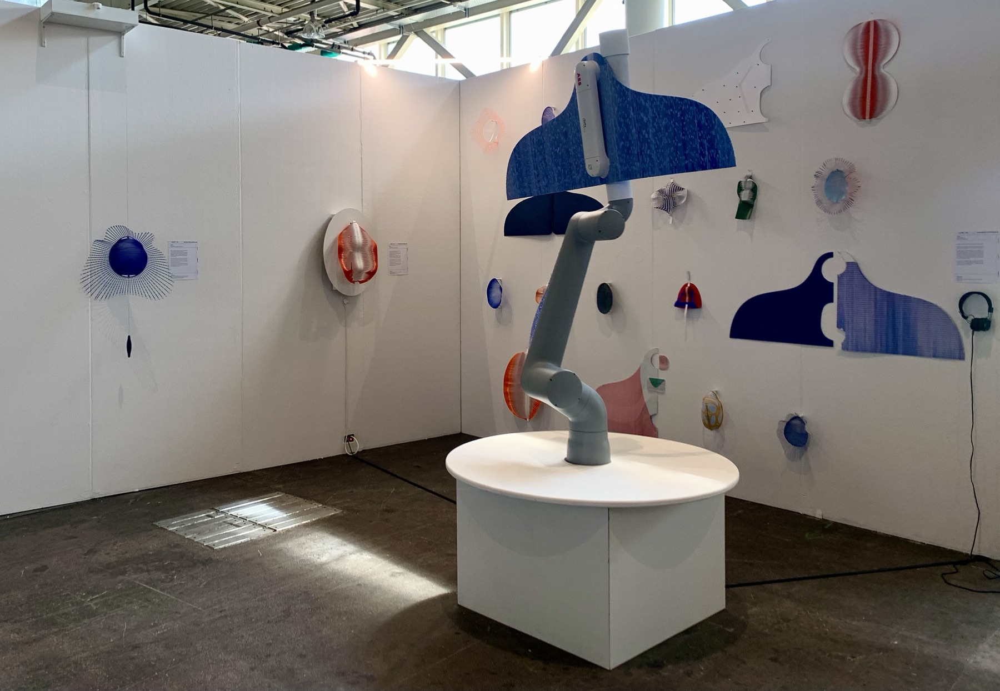
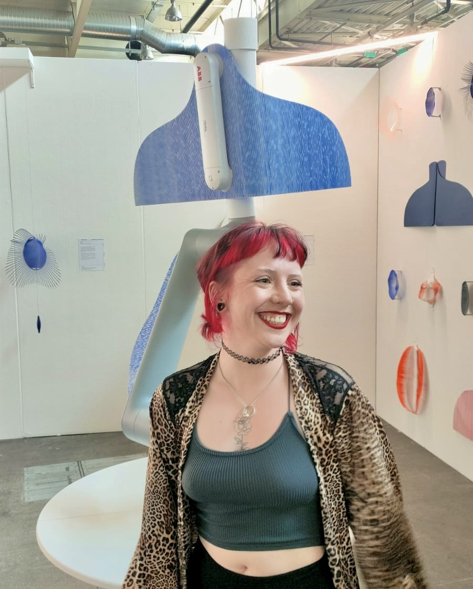
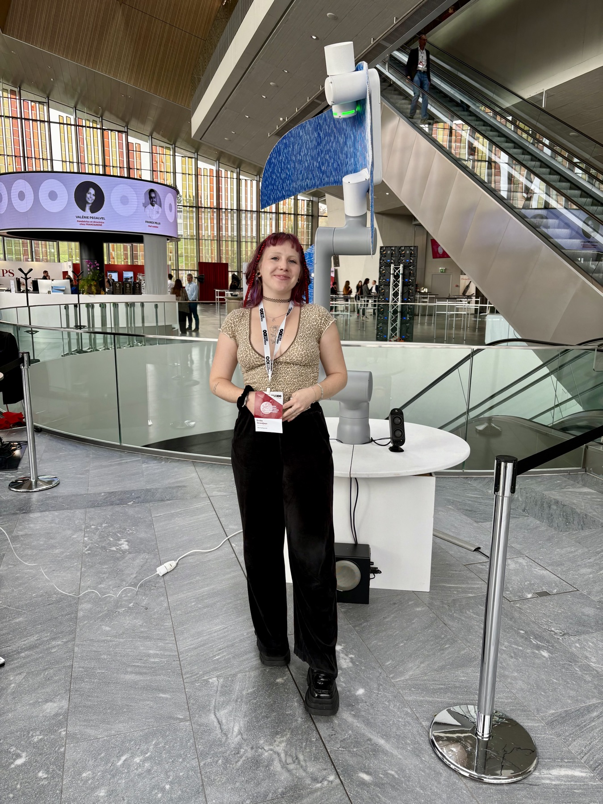

Spring 2025 · continued through Oct 2025
ABB × AI Driven Choreography
An industrial robot arm turned performer: music is translated into expressive, dance-like motion for an ABB GoFa collaborative robot.
- EPFL, Lausanne
- With design duo Claire + Léa and teammate Advaith
- Exhibited: Swiss Design Awards 2025 · Forum des 100
Overview
This project explores organic, poetic choreography for an ABB robotic arm, far from its usual industrial use. With AI, the arm is reimagined not as a tool but as a performer capable of expressiveness, gesture and emotional resonance.
The project was initiated by Claire + Léa, a design duo exploring robotics in artistic settings, and began as a collaboration with Advaith, my teammate. Together we set out to develop a sensitive, choreographic language for the machine, questioning the boundary between human intention and mechanical interpretation. It was first presented at the Swiss Design Awards in June 2025.
I then continued developing it. The first version danced to a single song; the next version added interactivity: visitors choose from a selection of music, which changes the robot’s movement. The audience becomes co-author of the performance.
How it works
- Audio input: a music track (WAV) is selected.
- Audio features → motion: MFCC features are extracted from the music and passed to a variational autoencoder (VAE) that generates joint trajectories.
- ROS 2 service: the generated trajectory is sent through a ROS 2 trajectory service.
- Smoothing: a MoveIt (
moveit_cpp) interface smooths the trajectory. - Execution: a ROS 2
joint_trajectory_controllerdrives the ABB GoFa arm.

Safety for public exhibition
Because the robot performed in front of visitors, safety zones and collision-avoidance protocols were set up in ABB RobotStudio for the live demonstrations.
Next steps
Real-time hand tracking with MediaPipe was explored so that visitors could influence the movement directly with gestures. It is not part of the exhibited version yet.
Gallery



Recognition
Selected for exhibition at the Swiss Design Awards 2025 in Basel, and invited to present at Forum des 100 (SwissTech Convention Center, Lausanne). By shifting robotics from productivity to expressivity, the project proposes a more human-centred vision of AI, where machines are built not only to execute but also to listen, adapt and dance.